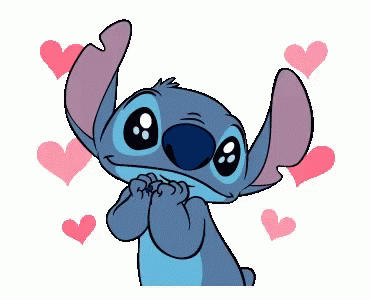

Feliz cumpleaños a la persona que siempre me alegra mis dias y en ocasiones me desespera, pero que jamas cambiaria su amistad y cariño por nada del mundo.
Antes que nada quiero dedicarte las mañanitas, claro con una version algo mas moderna, espero te guste.
Mis dedicatoria:
Este día que ya empieza
Te felicito y te lleno de paz
Este lindo y precioso día
Que cumples un año más.
Lo mas lindo es que cada año
Celebramos sin parar
Y siempre tú cumpleaños
Será muy especial.
No te desanimes con los obstáculos
Mira delante y triunfarás
Porque eres una buena persona
Y yo se que siempre lo serás.
Cuando estés triste nunca te olvides
De un amigo que te apoyará
En las buenas y en las malas
Y nunca te dejará.
Que lindo cuando una persona
Siempre está junto a Dios
No te olvides de él hermano
Y siempre serás mejor.
Siente junto a ti mi apoyo
Vamos unidos hasta el final
Que Dios te bendiga y te guarde
Y que cumplas muchos años más.

La imagen izquierda expresa literalmente mi cara de baboso por ti y la de la derecha cuando quiero tocar tus lunares pero tu no te dejas jaja.
Nuevamente como hace tiempo te quiero dedicar esta cancion.....
Deseo de todo corazon que todas las metas que te propongas las cumplas y que sea muy feliz a lado de tu familia espero seguir formando parte de tu vida hoy mañana y siempre. Te quiero mucgo mi niña y que Dios te bendiga, disfruta tu dia al maximo.